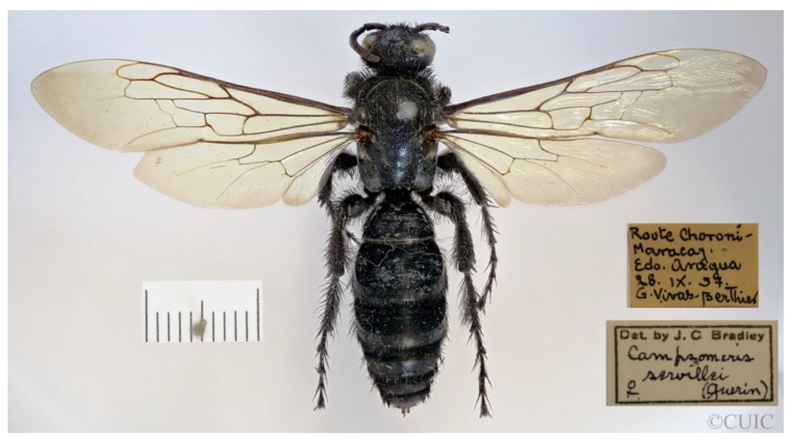

Tribu de avispas parasitoides, generalmente robustas y de coloración oscura, que pueden presentar manchas amarillas o rojizas en el abdomen. Las hembras buscan larvas de escarabajos que habitan en el suelo, donde depositan sus huevos. Los adultos suelen alimentarse de néctar y contribuyen al equilibrio ecológico mediante el control biológico natural de algunas poblaciones de coleópteros.